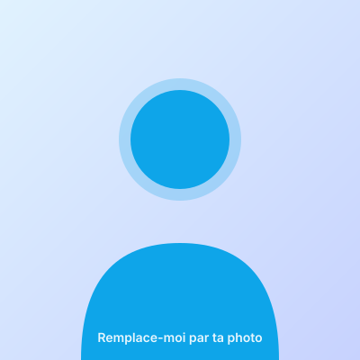

Formation, expériences et compétences : tout ce qui forge mon profil de futur technicien informatique.
Qui suis-je
Je m'appelle Romain Dieunon, j'ai [à compléter] ans et je suis actuellement étudiant en BTS SIO option SISR (Solutions d'Infrastructure, Systèmes et Réseaux).
Curieux depuis toujours pour tout ce qui touche à la technologie, j'aime comprendre comment les systèmes fonctionnent, diagnostiquer un problème et trouver une solution concrète. Mon objectif à l'issue du BTS est de m'orienter vers [licence pro / poursuite d'études / entrée dans la vie active — à compléter].
En dehors de la technique, je pratique [tes hobbies — à compléter]. Cette diversité m'aide à rester concentré, rigoureux et à aborder chaque problème avec méthode.

Parcours
Les étapes qui m'ont amené jusqu'au BTS SIO.
[Nom du lycée ou école] — [Ville]
Formation aux systèmes d'information, à l'administration des infrastructures, aux réseaux et à la cybersécurité. Projets pratiques et stages en entreprise.
[Nom du lycée] — [Ville]
Mention [à compléter]. Spécialités : [à compléter].
[Nom du collège] — [Ville]
Premières découvertes de l'informatique et du développement personnel autour du numérique.
Compétences
Les domaines sur lesquels je me forme dans le cadre du BTS SIO SISR.
Installation, configuration et administration.
Conception et administration de réseaux locaux.
Protection des données et des infrastructures.
Création et gestion d'environnements virtualisés.
Scripts pour automatiser les tâches récurrentes.
Suivi, monitoring et assistance utilisateurs.